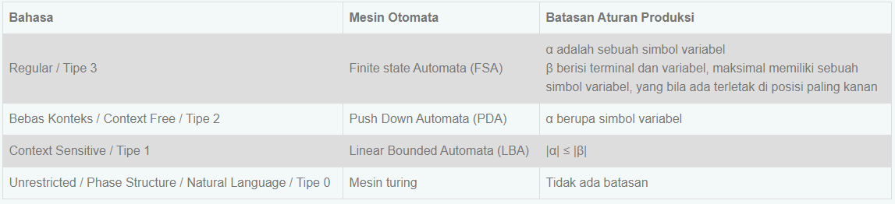

Hirarky Chomsky
Hierarki Chomsky merupakan tata Bahasa (Grammar) bisa didefinisikan secara formal sebagai kumpulan dari himpunan - himpunan variable, simbol-simbol terminal, simbol awal, yang dibatasi oleh aturan - aturan produksi. Pada tahun 1959 seorang ahli bernama Noam Chomsky melakukan pengelompokkan tingkatan bahasa menjadi empat, yang disebut dengan Hirarki Chomsky.
Penggolongan Bahasa Menurut Hirarki Chomsky
Noam Chomsky mengelompokkan bahasa menjadi 4 (empat) tingkatan. Yaitu, bahasa
unrestricted / Natural, bahasa Context Sensitive, bahasa bebas konteks (Context Free),
dan bahasa regular. Penggolongan tersebut bisa dilihat dari tabel dibawah ini :

Tabel diatas merupakan keterangan mengenai setiap bahasa, mulai dari bahasa tipe 3
sampai kepada bahasa tipe 0. Berikut ini akan dijelaskan dengan lengkap mengenai
masingmasing bahasa mulai dari tipe 3 sampai tipe 0 , contoh, mesin otomatanya, serta
aplikasi-aplikasi yang mungkin dari masing-masing mesin otomata ini.
Level-level Bahasa Hirarky Chomsky
Dalam hirarki chomsky, terdapat empat level bahasa yaitu level 0 (Natural Language),
level 1 (Contex sensitive), level 2 (Bebas Konteks), dan level 3 (Regular). Dari setiap
leveltersebut terdapat aturan-aturan produksi yang membatasinya. Contoh-contoh aturan
produksi untuk setiap level bahasa :
1. Level 0 (Natural Language)
Bahasa manusia termasuk kedalam tipe ini, dimana tidak ada batasan untuk aturan
produksinya.
Contoh :
a. Abc →aa
b. Bc → aBaB
c. CaB → aaBaaBa
2. Level 1 (Contex sensitive)
Panjang string di ruas kiri (α ) ≤ panjang string ruas kanan (β). Contoh :
a. Ab → aBa
b. cD → aB
c. dEd → FabCa
3. Level 2 (Bebas Konteks)
α adalah sebuah simbol variabel, dan batasannya bertambah bahwa ruas kiri harus tetap
satu simbol variabel. Contoh :
a. A → aa
b. B → aBD
c. C → FGaa
4. Level 3 (Regular)
Batasannya bertambah lagi, dimana ruas kanan maksimal memiliki sebuah simbol variabel
yang terletak paling kanan. Artinya bisa memiliki simbol terminal dengan jumlah tidak
dibatasi, tetapi bila terdapat simbol variabel maka simbol variabel tersebut hanya
berjumlah satu (1) dan terletak paling kanan. Contoh :
a. A → aa
b. B → aaB
c. C → aaaaa
Chomsky Hirarki terhadap Grammar Komputasi
Tata bahasa (grammar) bisa didefinisikan secara formal sebagai kumpulan dari
himpunan-himpunan variabel, simbol-simbol terminal, simbol awal yang dibatasi oleh
aturan-aturan produksi.
Aturan produksi merupakan pusat dari tata bahasa, yang menspesifikasikan bagaimana suatu
tata bahasa melakukan transformasi suatu string ke bentuk lainnya. Semua aturan produksi
dinyatakan dalam bentuk : “ α→β “ ( alpha menghasilkan betha atau alpha menurunkan
betha) α menyatakan simbol-simbol pada ruas kiri aturan produksi. β menyatakan
simbol-simbol pada ruas kanan aturan produksi